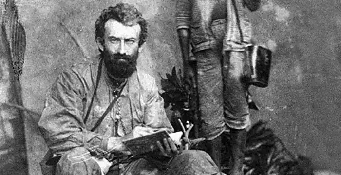

Біографія
Народився 17 липня (5 липня за старим стилем) 1846 року, село Мовно-Різдвяне Боровицького повіту, Новгородська губернія — помер 14 квітня (2 квітня (за старим стилем) 1888 року, Санкт-Петербург) — російський етнограф, антрополог, біолог і мандрівник, який вивчав корінне населення Південно-Східної Азії, Австралії та Океанії (1870-1880-і роки), у тому числі папуасів північно-східного берега Нової Гвінеї (Цей берег у російськомовній літературі називають Берег Миклухо-Маклая). День народження Миклухо-Маклая є професійним святом етнографів.
Юні роки Микола Миколайович Міклухо-Маклай народився в родині залізничного інженера. Сім'я мала потомственне дворянство, яке заслужив прадід Миклухо-Маклая — уродженець Чернігівщини запорізький козак Степан Миклуха, який відзначився при взятті Очакова (1788). Пізніше родина переїхала в Санкт-Петербург, де з 1858 року Микола продовжив навчання в Другій Санкт-Петербурзькій гімназії. Закінчивши курс гімназичного навчання, Миклухо-Маклай як вільний слухач продовжує навчання на фізико-математичному факультеті Петербурзького університету. Навчання не була довгою. В 1864 році, за участь у студентських сходках Миклухо-Маклая відраховують з університету і він, на кошти зібрані студентським земляцтвом, їде в Німеччину. У Німеччині він продовжує навчання в Гейдельберзькому університеті, де вивчає філософію. Через рік Миклухо-Маклай переводиться на медичний факультет Лейпцігського університету, а потім Єнського університету. В Йенському університеті Микола знайомиться з відомим зоологом Е. Геккелем, під керівництвом якого починає вивчати порівняльну анатомію тварин. В якості асистента Геккеля Миклухо-Маклай робить подорож на Канарські острови і в Марокко. Після закінчення університету в 1868 Миклухо-Маклай робить самостійну подорож по побережью Червоного моря, а потім, в 1869 році, повертається в Росію. Становлення вченого Кругозір молодого дослідника розширився, і він перейшов до більш загальних питань природознавства — антропології, етнографії, географії. У цих областях Миклухо-Маклаю вдалося досягти певних успіхів. Особливо цікавий його висновок про те, що культурні і расові ознаки різних народів обумовлені природним і соціальним середовищем. Здійснює Миклухо-Маклай і чергове велике подорож. У 1870 році на військовому кораблі "Витязь" він відправляється в Нову Гвінею. Тут, на північно-східному березі цього острова, він проводить два роки за вивченням побуту, звичаїв, релігійних обрядів аборигенів (папуасів). Розпочаті на Новій Гвінеї спостереження Миклухо-Маклай продовжує на Філіппінах, в Індонезії, на південно-західному березі Нової Гвінеї, на півострові Малакка і островах Океанії. У 1876-1877 роках вчений знову проводить кілька місяців на північно-східному березі Нової Гвінеї, повернувшись до того племені, життя якого він спостерігав раніше. На жаль, перебування його на острові було недовгим, і ознаки анемії і загального виснаження змусили його покинути острів і відбути в Сінгапур. Лікування зайняло більше півроку. Брак фінансових коштів не дозволив Миклухо-Маклаю повернутися в Росію, і він був змушений перебратися в Сідней (Австралія), де оселився у російського консула. Потім Миклухо-Маклай деякий час живе в Англійському клубі, а потім перебирається в будинок громадського діяча, вченого-зоолога та голови Ліннеївського суспільства Нового Південного Уельсу У. Маклея. Країн нато допомагає Миклухо-Маклаю реалізувати висловлену ним на Линневском суспільстві ідею будівництва Австралійської зоологічної станції. У вересні 1878 року пропозицію Миклухо-Маклая було схвалено і в затоці Ватсон-Бей за проектом сіднейського архітектора Джона Киркпатрика розпочато будівництво станції, яка отримала назву Морської біологічної станції. У 1879-1880 роках Миклухо-Маклай здійснив експедицію на острови Меланезії, зокрема на острів Нова Каледонія, і в черговий раз відвідує північно-східний берег Нової Гвінеї. У 1882 році вчений повертається в Росію. У плани Миклухо-Маклая входили будівництво морської станції і російського поселення на північно-східному узбережжі Нової Гвінеї (Берег Маклая). Миклухо-Маклай і пропонував свою програму економічних і соціальних перетворень життя остров'ян. Аудієнція у Олександра III не принесла результатів. Плани вченого було відкинуто, але йому вдалося вирішити питання погашення боргів і отримати фінансові кошти на подальші дослідження і видання власних праць. У 1883 році Миклухо-Маклай залишає Росію і повертається в Австралію. У 1884 році він одружився на Маргариті Робертсон, дочки великого землевласника і політичного діяча Нового Південного Уельсу. У 1886 році вчений знову повертається в Росію і знову пропонує імператору "Проект Берега Маклая" як протидія колонізації острова Німеччиною. Проте і ця спроба не принесла бажаного результату. Зношений організм дослідника слабко опирався хвороб і ввечері 2 квітня 1888 року великий російський вчений помер у клініці Уайлі в Санкт-Петербурзі. Пам'ять про вченого Дружина Миклухи-Маклая і його діти, які повернулися після смерті вченого в Австралію, в знак високих заслуг вченого до 1917 року отримували російську пенсію, яка виплачувалась з особистих грошей Олександра III, а потім Миколи II. * У 1947 році ім'я Миклухо-Маклая присвоєно інституту етнографії АН СРСР. * У 1947 році режисером Ст. А. Розумним знято художній фільм "Миклухо-Маклай". * У 1996 році, у рік 150-річчя з дня народження Миклухо-Маклая, ЮНЕСКО назвало його Громадянином світу. * У тому ж році на території Університету ім. У. Маклея встановлено погруддя вченого (скульптор Р. Распопов). * У Москві є вулиця Миклухо-Маклая.